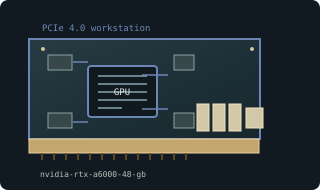

[ WORKSTATION GRAPHICS CARDS // IDENTIFIED COMPONENT ]
NVIDIA RTX A6000 48 GB
GA102 / Ampere professional graphics, 2020. This entry describes one identifiable model or reference configuration; related products and OEM variants are distinguished below.

MODEL / VARIANT: Ampere RTX A6000 is not GeForce RTX 3090 or RTX 6000 Ada. ECC and certified application behavior depend on driver and software configuration.
Recorded specifications
| Cataloged product | NVIDIA RTX A6000 48 GB |
|---|---|
| Generation / core | GA102 / Ampere professional graphics, 2020 |
| Core & memory | GA102; 10,752 CUDA cores; 48 GB GDDR6 with ECC; 384-bit bus; 300 W maximum board power. |
| Host interface & I/O | PCI Express 4.0 x16; one 8-pin auxiliary input; four DisplayPort 1.4a outputs on reference card. |
| Variant boundary | Ampere RTX A6000 is not GeForce RTX 3090 or RTX 6000 Ada. ECC and certified application behavior depend on driver and software configuration. |
| Archival identification | Record complete part number, PCB revision, BIOS/firmware, device/subsystem IDs, driver version, adapters, condition, and source-document edition. |
Compatibility, service & archival notes
48 GB ECC GDDR6 distinguishes this workstation SKU from same-generation GeForce products.
Check 8-pin lead, blower clearance and rear exhaust airflow. Record ECC state, firmware and driver version; preserve bracket and serial label.
- Check signaling, slot keying, lane width, power pinout, board length, case clearance, airflow, and PSU requirements for the exact item.
- Use drivers for the device ID and target OS; preserve installer/firmware copies and record their source before updates.
- Do not power hardware with corrosion, cracks, damaged connectors, obstructed cooling, or suspected shorts; document condition before bench testing.
Manufacturer, model & standards sources
- NVIDIA RTX A6000 product specificationsModel-specific product or interface reference; compare with the physical label and exact board revision.
- RTX A6000 model specificationsModel-specific product or interface reference; compare with the physical label and exact board revision.
- PCI Express specificationsModel-specific product or interface reference; compare with the physical label and exact board revision.
Reference specifications do not supersede the board vendor manual and nameplate. Performance figures are vendor claims unless identified as measured results.